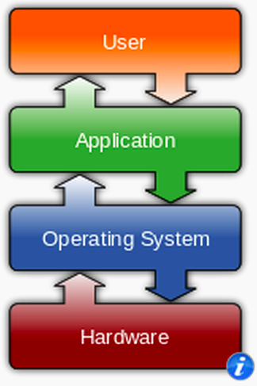
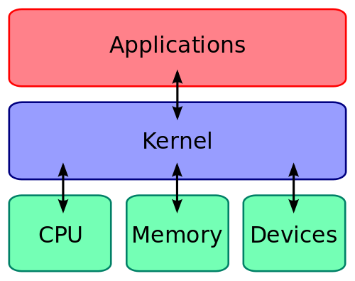

CIS 527
Lab 1 - Introduction
Module 1 - Secure Workstations
- Install VM Software
- Install Windows & Ubuntu
- Configure Users & Files
- Software & Security
Operating Systems
Architecture
Image Source: Wikipedia
Kernel
Image Source: Wikipedia
OS Components
- Graphical User Interface (GUI)
- Command Line Interface (CLI)
- Program Manager